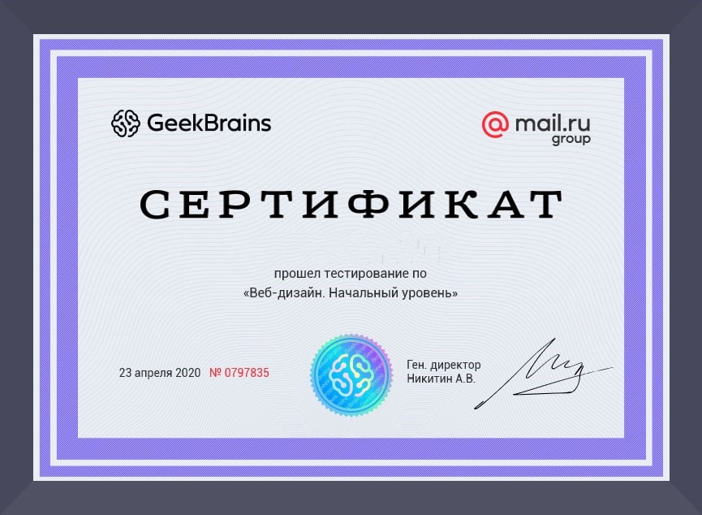
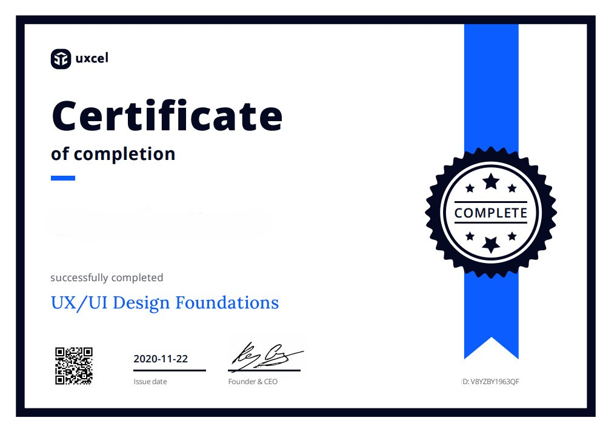

Сертификат по Web-разработке
Подтверждение прохождения курса по современным технологиям веб-разработки.
Малышева Ирина успешно завершил(а) курс по веб-дизайну, продемонстрировав(а) высокую заинтересованность и усердие в освоении современных методик проектирования веб-интерфейсов. В ходе обучения он(а) овладел(а) ключевыми навыками, включая:
✅ Основы UX/UI-дизайна – понимание принципов удобного и эстетичного пользовательского интерфейса.
✅ Работа с графическими редакторами – уверенное владение инструментами для создания макетов (Figma, Adobe XD, Photoshop).
✅ Основы цветовой теории и типографики – грамотное использование визуальных элементов для гармоничного дизайна.
✅ Прототипирование и создание адаптивных макетов – разработка интерактивных прототипов для различных устройств.
✅ Базовые знания HTML/CSS – понимание верстки и взаимодействия дизайна с кодом.
В процессе обучения Ирина Малышева выполнил(а) финальный проект, где продемонстрировал(а) практические навыки по созданию веб-дизайна, что подтверждает его(её) готовность к профессиональной деятельности в данной сфере.
Полученный сертификат подтверждает компетенции в области веб-дизайна и способность разрабатывать удобные, современные и визуально привлекательные интерфейсы.
📌 Готов(а) к дальнейшему профессиональному развитию и работе над реальными проектами!

Сертификат по Python
Сертификат об успешном завершении курса программирования на Python.
Малышева Ирина успешно завершил(а) курс по программированию на Python, продемонстрировав(а) высокий уровень заинтересованности и настойчивости в изучении современных технологий разработки. В ходе обучения он(а) освоил(а) ключевые навыки, включая:
✅ Основы Python – понимание синтаксиса и принципов работы языка.
✅ Работа с библиотеками и фреймворками – уверенное применение таких инструментов, как NumPy, Pandas, Django/Flask.
✅ Алгоритмы и структуры данных – эффективное решение задач с использованием стандартных алгоритмов.
✅ Разработка веб-приложений – интеграция серверной и клиентской частей с использованием Python.
✅ Основы тестирования и отладки кода – применение современных методик для обеспечения качества ПО.
В процессе обучения Ирина Малышева выполнил(а) финальный проект, где продемонстрировал(а) практические навыки по созданию полнофункциональных приложений, что подтверждает его(её) готовность к профессиональной деятельности в области программирования.
Полученный сертификат подтверждает компетенции в области Python-разработки и способность создавать эффективные и надёжные программные решения.
📌 Готов(а) к дальнейшему профессиональному развитию и участию в реальных проектах!

Сертификат по UX/UI дизайну
Документ, подтверждающий участие в специализированном тренинге по UX/UI дизайну.
Малышева Ирина успешно завершил(а) курс по UX/UI дизайну, продемонстрировав(а) высокий уровень креативности и внимательности к деталям в освоении современных методов проектирования пользовательского опыта. В ходе обучения он(а) овладел(а) ключевыми навыками, включая:
✅ Основы UX-дизайна – понимание потребностей пользователя и создание интуитивно понятных интерфейсов.
✅ Прототипирование и тестирование – разработка интерактивных прототипов и проведение пользовательских тестирований.
✅ Основы UI-дизайна – создание визуально привлекательных и функциональных интерфейсов с использованием современных инструментов (Figma, Adobe XD).
✅ Исследование и анализ пользовательского поведения – сбор и интерпретация данных для улучшения дизайна.
✅ Основы типографики и цветовой теории – грамотное сочетание визуальных элементов для гармоничного оформления.
В процессе обучения Ирина Малышева реализовал(а) финальный проект, где продемонстрировал(а) практические навыки по созданию инновационных дизайнов, что подтверждает его(её) готовность к работе в сфере UX/UI дизайна.
Полученный сертификат подтверждает компетенции в области дизайна пользовательского опыта и способность создавать удобные и современные интерфейсы.
📌 Готов(а) к дальнейшему профессиональному развитию и участию в реальных проектах!